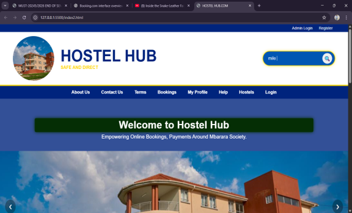

A complete web-based application for booking and paying hostels.
This report covers the system design, features, and technologies used to build the hostel booking application.
Hostel Hub is an innovative digital platform designed to simplify and secure the process of searching, booking, and managing hostel accommodations around Mbarara University and surrounding communities mainly among students.
The innovation addresses challenges faced by students and travelers who traditionally rely on word of mouth, physical movement, or unreliable agents to find suitable hostels.
Hostel Hub enables users to search hostels online, make payments, submit complaints, and access verified information instantly.
The solution empowers students and hostel owners by improving safety, transparency, accessibility, and convenience.
Hostel Hub reduces travel costs, eliminates fraud, and enhances access to accommodation services while creating an organized communication channel between hostel owners, university bodies, and students.
Access to reliable, affordable, and secure hostels is a major concern for university students across Uganda.
Many students face challenges such as walking long distances searching for available rooms, paying fraudulent agents, or receiving inaccurate information.
Hostel Hub was developed to address this long-standing issue by digitizing the hostel booking ecosystem.
The system provides verified hostel listings, online booking, communication tools, a review system, and automated search functionality.
The innovation is relevant at both community and national levels because it promotes digital transformation, reduces risks, and improves service delivery.
The primary objective is to ensure safe, fast, and direct access to hostel accommodation.
The unawareness and lack of information about available hostels around Mbarara University of Science and Technology leaves many students stranded because they do not know where to get hostels, how to access them, and who to contact.
Many first-year students begin university without knowing where they will stay. This issue stems from a lack of centralized and accurate information regarding available accommodation.
As a result, students are often forced into undesirable or last-minute accommodation choices, even after the semester has already begun.
Research conducted at Mbarara University of Science and Technology identified poor awareness of available hostels as one of the major reasons students end up in poor housing conditions.
If this challenge continues, students will continue struggling to find safe, reliable, and affordable accommodation.
Hostel Hub addresses this challenge by providing a platform that directly links students with hostel owners, enabling room viewing, searching, and booking without requiring physical movement around the university. To view the hosted web application, open the live Hostel Hub project.

Select one or more images and they will appear below.